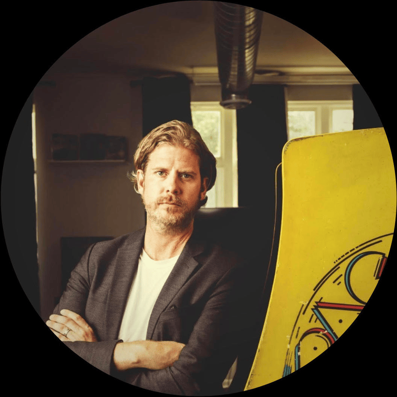

The fourth Game Arts International Assembly will be on DATE, online. With a participant cap of 20, GAIA is an intimate symposium for game
art curators and game community organizers to level up their professional development and connect with their international peers. In
addition to talks sharing personal experiences, playful workshops, and practical sessions, GAIA will include XXX.
GAIA 2024 Participants
Allison JingYang
üá®üá≥ Hong Kong, China
Yang Jing (Allison) is a producer and storyteller currently based in Hong Kong. You can
usually find her designing a game or game experience, curating a game-related exhibition, writing research and media pieces on
game and gaming (particularly in the sinophone context), teaching game courses in universities.
cultural affiliations: board member of Lithuanian game developers association.
Artūras is a Media professional with a
passion to understand and promote video game culture. Several years of experience covering online and offline media as well as
organizing events of various scales, including the largest video games culture convent - GameOn Vilnius.
Jooyoung Oh
üá∞üá∑ South Korea
Jooyoung is a media artist who uses interactive technologies such as games and artificial
intelligence chatbots. She has developed her work under two interdisciplinary backgrounds: visual design and engineering. She is
interested in the process of human visual perception and studies the simulation of artificial cognitive models, while at the
same time constantly asking questions about the limitations of science and technology from the perspective of her artist.
Leanne (Lan) Roed
üá®üᶠCanada
game art project(s): Alt Games Vancouver and Heart Projector
a game they made: Cribbage With Grandpas
cultural affiliations: Blackbird Interactive
Lan has been making games in the industry for ten years. In addition to working on projects
at several studios in Vancouver she has worked on two independent games during that time. Cribbage With Grandpas, her most
recent indie project, has been featured multiple times on the Apple App Store and was nominated for IndieCade 2017. In her spare
time she works with a group she co-founded with a group of game devs called Heart Projector to curate pop up arcades in
Vancouver.
Len is a practising artist with a Bachelor of Design from OCAD
University. He is the current Executive Director of Hand Eye Society and works as a Community Manager at Kitten Cup Studio. They
have most recently completed a residency in Waiting and Escaping from the School of MAAA in Berlin as well as an intensive in
puppetry from the Banff Centre for the Arts.
Pablo Quarta
üá¶üá∑ Argentina
game art project(s): Matajuegos
a game they made: Atuel
Pablo is a Narrative Designer and Producer who
has been working on games since 2015. He is also one of the co-founders of the Argentine indie game collective and worker’s
co-op, Matajuegos, which has focused on creating games with strong Latin-American identities that explore social, political, and
artistic perspectives drawn from our their cultural context, personal lives, and activism. He has recently worked on Atuel, an
award-winning surrealist documentary game about the history of the Atuel River Valley in western Argentina and the effects of
climate change.
Pietro Righi-Riva
üáÆüáπ Italy
cultural affiliations: Co-founder and creative director of Santa Ragione, curator of the Triennale Game Collection
project at Triennale Milano
Pietro Righi Riva, co-founder and creative director of Santa Ragione, the independent
studio that produced award-winning video games such as FOTONICA, MirrorMoon EP, Wheels of Aurelia, and Saturnalia. Righi Riva
holds a PhD in Interaction Design at the Politecnico di Milano.
Katherine Boutin
üá®üᶠCanada
Katherine is a freelance CM and floor producer
based in Montreal. She currently manages events and raises communities over at Work With Indies, Loto-Quebec, and more. Her
dreams include owning an Aibo someday and producing bigger shows that highlight the video game industry.
Sun Park (from Out of Index)
üá∞üá∑ South Korea
Sun Park has a Multi Media bachelor degree from Segang Univ. He is the Creative
director at Turtle Cream Game Studio Sun is also the Festival director of the Experimental Game festival Out Of Index and the
South Korea regional organizer of the Global Game Jam.
Jo Summers
üá¨üáß UK
game art project(s): Now Play This, Global Game Jam, Profanity Itd
Jo specialises in digital production and technology events. Jo has eight years
experience of running a wide range of community and technology focused events, from concept to completion.

Jonathan Kinkley
üá∫üá∏ USA
cultural affiliations: Chicago Gamespace / VGA Gallery
Jonathan is an arts writer and museum professional with a scholarly focus on
video games and new media art. He is currently owner and curator, Chicago Gamespace; director of arts advancement at University
of Illinois at Chicago; and Co-Founder, Executive Director (2013 - 2020) and Board Member, VGA Gallery.
D. Squinkifer
üá®üᶠCanada
a game they made: Founder of Soft Chaos
D. Squinkifer, aka Squinky, is a transgender and neurodivergent new media artist based in
Montreal, with a background in game development and performance. They hold an MFA in Digital Arts and New Media from UC Santa
Cruz and were recognized as part of Forbes' 30 Under 30 in Games in 2015. They are one of three cofounders of Soft Chaos, a
worker-owned cooperative studio that designs experimental videogames, tabletop games, larps, art installations, and interactive
performances.
Matt Parker
üá∫üá∏ USA
Matt is an Associate Professor of the Arts at the NYU Game Center, where he serves as the Area Head
for Programming and is the Director of Special Projects. Professor Parker was the founder chair for IndieCade East and Chair for
the festival and conference from 2013-2015. He was the lead Curator for the Game For Change conference in 2016 and 2018. In 2018
he co-founded the OpenAir Collective, a global volunteer network that empowers its members to fight climate change by advancing
carbon emissions reduction and removal. Matt is also a game designer and new media artist.
Shawn Alexander Allen
üá∫üá∏ USA
Shawn Alexander Allen is a game developer, artist, and writer based in New York
City. He is known for his work on the game Treachery in Beatdown City and has a passion for exploring social and political
themes through his creative projects.
Nick Murray
üá¨üáß UK
Nick Murray is a game designer and developer based in the UK. He is known for his
innovative and experimental approach to game design, pushing the boundaries of interactive experiences.
Artūras Rumiancevas
üá±üáπ Lithuania
game art project(s): GameOn Baltics, BLON
a game they made: Atuel
Artūras is a Media professional with a
passion to understand and promote video game culture. Several years of experience covering online and offline media as well as
organizing events of various scales, including the largest video games culture convent - GameOn Vilnius.
Paloma Dawkins
üá®üᶠCanada
experience: Event producing, Community organizing, Game art/dev
Paloma Rendón Dawkins is a Canadian cartoonist turned award winning virtual-reality and
video-game artist. She is founder of the XR and animation studio Apocablyss Studios(2021). Rendón Dawkins games are praised for
being digital spaces that celebrate natural life and rhythms. Pre-pandemic she organized events for avant-garde and performative
games/experiences as well as game jams in Montreal and around the world.
Lynn Hughes
üá®üᶠCanada
game art project(s): TAG games research centre
Lynn Hughes has a background in English, Art and the History
and Philosophy of Science and Technology. She was a painter for many years but began, around 2000, to slowly move into
interactive production, and then games. In 2008 she founded the Technoculture Art and Games (TAG) research centre at Concordia
University (Montreal) with Bart Simon. She has been making idiosyncratic games that avoid screens and focus on the body and
sociality since then. She sometimes curates and organizes other events.
Emily Koonce
üá∫üá∏ USA
cultural affiliations: NYU Game Center, Tender Claws
Emily Koonce (she/her) is a writer, educator, and game designer
interested in the intersection of folk games, philosophy, and education.
Zuraida Buter
üá≥üá± Netherlands
game art project(s): Playful Arts Festival
cultural affiliations: Curator: A MAZE. / Berlin, IndieCade EU, Incubate Arcade, Screenshake, The Overkill, Playtime
20.22
Zuraida Buter (she/her) is a playful arts curator with close to 20 years of experience. She
curates, consults and documents events, exhibitions and projects focused on playful arts, digital culture and games.
Susie Buchan
üá¨üáß UK
game art project(s): Arcadia
a game they made: Biome Collective
Susie Buchan is a Creative Producer of
events, festivals and digital experiences who works across games, arts and esports. She is currently a producer for Scottish
independent games festival Arcadia and is a director of Dundee based games studio and community Biome Collective.
NPCKC
üáØüáµ Japan
npckc is a solo developer based in japan making little story games. Their games can be found
on itch.io, steam, google play & consoles. They also provide translation, review, writing & design services. Most recently they
have organised a zine bundle called 同ZINE / douZINE, which showcases doujin and indie games made in Japan.
Chaz Evans
üá∫üá∏ USA
cultural affiliations: University of South Carolina, VGA Gallery
Chaz is Assistant Professor of Media Art at the University of South Carolina as well as
Co-Founder of VGA Gallery. Evans is an artist, educator, writer, and curator. His work deals with the connections between video
game art, 3D animation, software production, and the art historical past as well as the tensions between global technological
powers and local media cultures.
Bethlehem Anteneh
üá™üáπ Ethiopia
game art project(s): EnterAfrica
Bethlehem is an Architect and Game-Thinking designer
interested in ways of how physical environment, challenges and their Game-Thinking overlap to create spaces and activities that
elevate human activity, thought and experience. She has designed and facilitated 11+ workshops around 8 countries. Bethlehem
defines herself as crazy passionate about finding different perspectives/understandings; designing new, simple and playful
solutions. In this regard, she has been on 8+ different stages around Africa and Europe, to name some: Gamescom, Nordic Game
Jam, AfricaTechSummit, Urban Age Conference, AMAZE fest, DW... I also have delivered 5+ Experiential Design and 8 mobile
Experience Designs. She has worked on different projects with British Council, DFID, Goethe Institut, Alliance EthioFrancias,
IceAddis…
11:10 - 12:00 (50m) Jo Summers + Allison Yang
What's going on in the global game art scene? We’ll each share our local events, as well as identify our global blind-spots.
Thematic Session
Lunch Break + Afternoon Walk
12:00 - 14:00 (120m)
Explore Chinatown and Kensington Market!
Thematic Session
Curatorial Practice
14:10 - 15:00 (50m) Pietro Righi-Riva + Jonathan Kinkley
Reviewing case studies of game exhibitions both IRL and digital, and workshopping solutions for various curatorial challenges.
Thematic Session
Break
15:00 - 15:10 (10m)
New Structures
15:15 - 16:00 (50m) Susie Buchan + Pablo Quarta
How do we want to work together with our collaborators, peers, volunteers, or employees? We share our experiences and learnings, and
dream up new formats.
Thematic Session
Break
16:00 - 16:10 (10m)
Group Round Up
16:20 - 16:40 (30m) Shalev Moran
Looking back at today's highlights + Reminder of tomorrow's schedule. (Confirmation of outdoor location dependent on weather.)
10:50 - 11:40 (50m) Lan Roed + Matt Parker + Artūras Rumiancevas
What are public spaces, who can access them and how, and who can safely subvert them? We will explore these topics through organizing
a public game together.
Thematic Session
Lunch Break + Afternoon Walk
11:45 - 14:00 (120m)
Dream Big!
14:00 - 14:50 (50m) Marie LeBlanc Flanagan + NPCKC
What kinds of curation, events, or gatherings would you host with unlimited resources? Is there anything you've been dreaming of
making but are stuck on?
Thematic Session
Break
14:50 - 15:00 (10m)
The Magic Square
15:00- 15:50 (50m) Emily Koonce + Paloma Rendon Dawkins
We conjure our experiences and disciplines OUTSIDE of games and / or curation, and work through them to inspire ourselves and each
other.
Thematic Session
Break
15:50 - 16:00 (10m)
Group Round Up
16:00 - 16:20 Shalev Moran
Looking back at today's highlights + reminder of tomorrow's schedule.